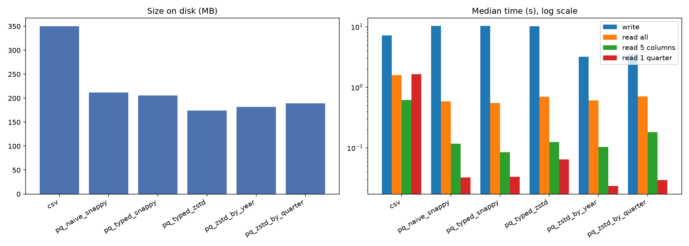
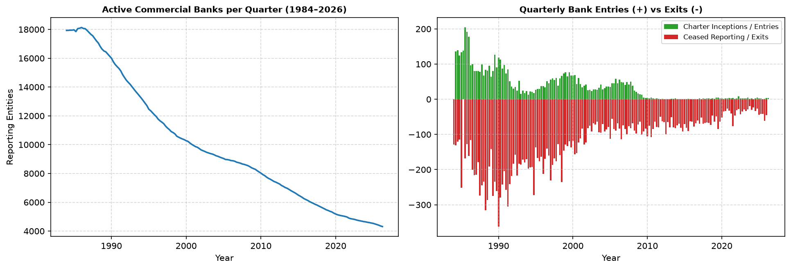
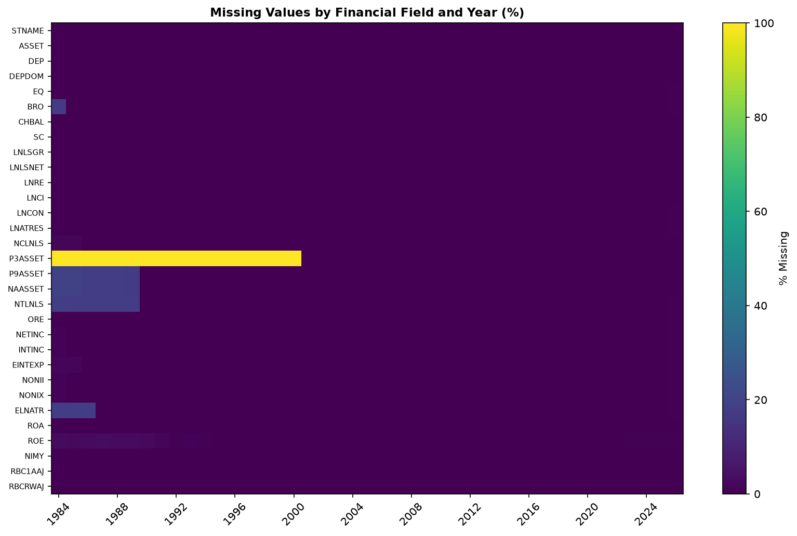
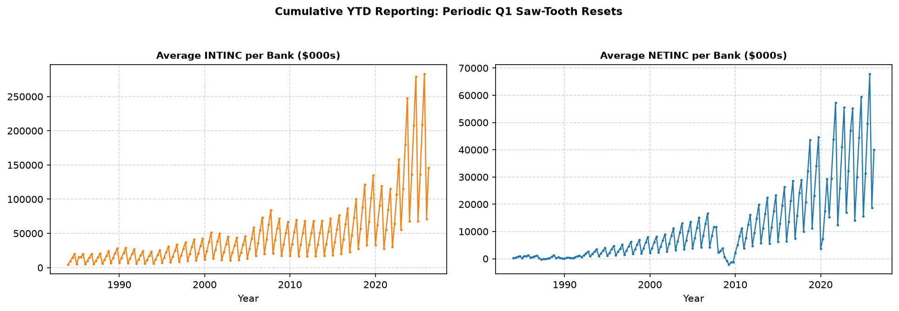

financials): 1,682,616 rows across 24,064 distinct bank chartersinstitutions): 27,835 recordsfailures): 4,117 recordssplit = unlabeled)FAILURE records with failure date in 1984-04-01 .. 2007-12-31)FAILURE records with failure date in 2008-04-01 .. 2026-06-30). Evaluated once, after the design is frozen (§6.7)Answers in brief. Q1 (storage and processing). Typed Parquet with ZSTD halves the size of the raw CSV (174.1 MB against 350.1 MB) and, partitioned by year, reads one quarter about 70 times faster; Polars in lazy mode processes the whole 42-year panel on an 8 GB laptop in under two seconds for each of the two core transformations measured, and Spark in local mode was 3.8 to 12.6 times slower on the same machine, so a cluster is not justified at this size (§4.7). Q2 (quality and look-ahead bias). The audit found problems in the target, the exits and the income statement (year-to-date flows, assistance versus failure, 1,069 post-failure filings, 16,541 exits that are not failures); each is handled by a rule that uses only information available at the quarter being scored, and the label logic is checked by independent recomputations (§3, §4.6). Q3 (validation). The output supports an honest evaluation: with time-ordered purged validation, rules registered before the test period, and one logged test run, the frozen logistic regression reached a PR-AUC of 0.61 and a ROC-AUC of 0.984 on 2008Q1–2025Q2, and saved 49% to 82% of the cost of never alerting under the assumed cost ratios; the limits are stated in §7.4.
In bank failure early-warning systems, regulatory integrity demands that the ingestion pipeline is fully reproducible, deterministic, and verifiable. Using the public FDIC BankFind Suite API, an automated, resumable extraction pipeline was implemented (src/01_download.py) covering the complete temporal scope specified by the supervisory authority: 1984Q1 to 2026Q2 (170 consecutive quarters).
To prevent transient network failures or abrupt process interruptions from corrupting the local repository, the acquisition engine implements three core engineering safeguards:
manifest.json) records the status, row count, API-reported meta.total, and SHA-256 hash digest of each quarterly batch. Any previously downloaded quarter that matches its cryptographic signature is skipped upon re-execution..parquet.tmp) and only committed to the persistent directory via an atomic filesystem rename (os.replace) once schema conformance, row counts, and duplicate primary keys (CERT, REPDTE) are strictly verified.Retry-After headers and decaying politely with exponential back-off up to 6 retry attempts.An offline, zero-network integrity audit (python src/01_download.py --verify-only) was conducted across all on-disk artifacts:
financials): Exactly 1,682,616 records across 24,064 distinct bank charters (CERT) were verified with zero row count discrepancies against API totals and zero duplicate primary keys.institutions): 27,835 chartered entity records.failures): 4,117 historical failure events dating from 1934 to 2026.CERT, and all of them are dated before 1984. All failure records inside the study scope (1984 onwards) have a non-null CERT, so the label suffers no attrition from missing identifiers. 44 non-null CERT values are repeated in the full registry; ID is used as the surrogate primary key, and the repeated charters inside the scope are analysed in §3.1.4.A systematic inspection of the 170 raw quarterly Call Report Parquet files (check_schema.py) uncovered a critical data quality challenge: schema heterogeneity across quarters. Because the FDIC API dynamically serializes numeric values:
DEP, CHBAL, LNLSGR) fluctuate between int64 and double across different reporting periods depending on whether integer rounding was applied by filing institutions.P3ASSET) are entirely null in early years (first non-null year 2001), so naive schema inference assigns a null type rather than a numeric type.REPDTE) are natively returned as unstructured strings (large_string).Naively concatenating these raw files triggers Arrow schema mismatch exceptions or coerces all numeric fields into 64-bit floating point numbers (float64), which bloats memory consumption and introduces potential IEEE 754 precision issues.
To resolve this without look-ahead bias, an explicit Unified Typed Schema was designed:
REPDTE is cast to date32 (saving 75% memory compared to string representation).CERT is verified to reside within $[-2^{31}, 2^{31}-1]$ (maximum observed: 91,325) and safely cast to int32.int64.ROA, ROE, NIMY, RBC1AAJ, RBCRWAJ) are retained as float64.Mathematical Verification: The transformation is strictly lossless. A column-by-column fingerprint check comparing the null counts, distinct counts, and sum of values before and after type casting confirmed zero data loss (exact_equal_to_reference = True).
To quantitatively evaluate storage efficiency and analytical query latency, six layout architectures were benchmarked on a standard supervisory workstation (Intel Core i5-10210U @ 1.60GHz, 8.0 GB RAM, Windows 11). Each read/write operation was measured over 5 timed iterations following an untimed warm-up pass to eliminate operating system cache warm-up variance (src/02_storage_benchmark.py).
| Storage Layout | Format & Details | Files | Size (MB) | vs CSV | Write Time (s) | Full Scan (s) | Read 5 Cols (s) | Read 1 Qtr (s) |
|---|---|---|---|---|---|---|---|---|
| 1. Raw CSV | Uncompressed Text | 1 | 350.1 MB | 1.00x | 7.20s | 1.60s | 0.617s | 1.655s |
| 2. Parquet Naive | Snappy, all float64 | 1 | 211.7 MB | 0.60x | 10.27s | 0.589s | 0.117s | 0.032s |
| 3. Parquet Typed | Snappy, optimized types | 1 | 205.9 MB | 0.59x | 10.33s | 0.548s | 0.085s | 0.033s |
| 4. Parquet Typed | ZSTD, optimized types | 1 | 174.1 MB | 0.50x | 10.25s | 0.697s | 0.125s | 0.064s |
| 5. Parquet Partitioned | ZSTD, partitioned by YEAR |
43 | 181.6 MB | 0.52x | 3.18s | 0.610s | 0.103s | 0.023s |
| 6. Parquet Partitioned | ZSTD, partitioned by QUARTER |
170 | 189.6 MB | 0.54x | 3.51s | 0.709s | 0.181s | 0.029s |

Figure 1: Comparison of disk footprint across storage layouts (MB).The empirical measurements demonstrate why raw CSV is wholly unsuitable for central bank early-warning systems, and validate our recommended production architecture:
CERT, REPDTE, ASSET, NETINC, ROA) on Parquet Typed Snappy takes 0.085 seconds — a 7.3x speedup over CSV (0.617s). CSV forces the engine to read and tokenize all 33 columns line-by-line, whereas Parquet reads only the targeted column chunks directly from disk.Preliminary conclusion for Q1 (storage): Four decades of quarterly Call Reports (~1.68 million rows) can be stored in under 185 MB and queried in milliseconds on an ordinary commodity laptop using Year-Partitioned Parquet with ZSTD compression. At this volume a distributed cluster is not needed for storage or for simple queries; the scaling argument for the processing steps is made from measurements in Part 3.
An automated, non-destructive audit (src/03_quality_report.py, about 11 seconds for all 170 quarters on the author's laptop) inspects the 170 quarterly Call Reports, the 4,117 failure records and the 27,835 institution records. It follows a measure-only mandate: no raw record is dropped, clipped or modified. All numbers below are produced by that audit (report/dq_report.md, report/dq_*.csv) or by the read-only diagnostic scripts listed in the README (src/diagnostics/); each is stated with the script that produced it.
| Item | Value |
|---|---|
| Bank-quarter rows | 1,682,616 |
Distinct bank charters (CERT) |
24,064 |
| Quarters | 170 (1984Q1 – 2026Q2) |
| Banks per quarter (min – max) | 4,313 – 18,133 |
Duplicate keys (CERT, REPDTE) / null CERT |
0 / 0 |
| Banks with internal reporting gaps | 32 (92 missing bank-quarters) |
| Single-quarter reporters | 204 |
| Banks that stop reporting before 2026Q2 | 19,751 |
| Banks still reporting in 2026Q2 | 4,313 |
Only 32 banks (0.13%) have internal gaps, so missing quarters are not interpolated; every lag or growth feature is computed on calendar dates (REPDTE), never on row offsets.

Figure 2: Active commercial banks per quarter, 1984Q1 – 2026Q2.
Figure 3: Share of null values by indicator and year.The audit shows that some indicators are null for entire early periods. P3ASSET has no non-null value before 2001 (100% null in the first panel year). P9ASSET and NAASSET are 19.2% null in 1984, BRO 17.7%, and NTLNLS/ELNATR 18.5%. We state only the observation; we do not attribute it to a specific regulation because the FDIC dictionary does not say so. Handling: structural nulls are never back-filled with later values (that would be look-ahead). P3ASSET is excluded from the feature set because it is missing for most of the development period (§5); the remaining nulls are handled by an imputer fitted on the development sample only (§5.3).
Candidate flow variables were tested against ASSET (a stock, used as a negative control) on bank-years with four complete quarters.
Table 2: Within-year behaviour of candidate flow variables (report/dq_ytd_evidence.csv, check_ytd_extra.py)
| Variable | Complete bank-years | Share with Q1≤Q2≤Q3≤Q4 | Median |Q2|/|Q1| | Median |Q3|/|Q1| | Median |Q4|/|Q1| |
|---|---|---|---|---|---|
| NETINC | 407,328 | 76.64% | 2.05 | 3.12 | 4.08 |
| INTINC | 407,328 | 99.52% | 2.02 | 3.06 | 4.11 |
| EINTEXP | 407,068 | 99.51% | – | – | 4.05 |
| NONII | 407,328 | 96.60% | – | – | 4.26 |
| NONIX | 407,328 | 99.45% | – | – | 4.16 |
| ELNATR | 397,938 | 91.24% | – | – | 4.33 |
| NTLNLS | 389,153 | 59.47% | 1.83 | 3.00 | 5.14 |
| ROA | 408,605 | – | 1.01 | 1.02 | 0.99 |
| ROE | 404,298 | – | 1.01 | 1.01 | 0.99 |
| NIMY | 408,605 | – | 1.01 | 1.01 | 1.01 |
| ASSET (control) | 408,605 | 33.12% | 1.01 | 1.02 | 1.04 |
("–" = not measured in that script.) The seven income-statement variables follow the pattern expected from a cumulative year-to-date series (ratios close to 2, 3 and 4 against Q1); ROA, ROE, NIMY and the control ASSET do not (ratios close to 1) and are kept as reported. NTLNLS shows ratios 1.83 and 3.00 for Q2 and Q3 and 5.14 for Q4; we treat it as YTD-like but note that its Q4 ratio exceeds 4 and that it is the least clean of the seven (see P15 below). YTD_FLOW_COLUMNS in config.py lists the seven variables.

Figure 4: Saw-tooth pattern of cumulative year-to-date flows (quarterly average INTINC and NETINC).Consequence. Unadjusted YTD flows are about four times larger in Q4 than in Q1, so any ratio built from them would drift with the calendar quarter. Step 04 converts them to single-quarter values (§3.2).
The registry holds 4,117 records (3,524 FAILURE, 593 ASSISTANCE), of which 3,273 fall inside the study scope (1984-01-01 to 2026-06-30): 2,861 FAILURE and 412 ASSISTANCE. All 3,273 have a non-null CERT (the 488 null CERT values in the registry all pre-date 1984). 3,251 events link to the panel; 22 do not (21 FAILURE, 1 ASSISTANCE; src/04_build_panel.py, stage 4). The reason for these 22 has not been established, and we do not assert one. They carry no panel rows, so they can never become positive labels; this is a recall ceiling of 21 failures out of 2,861 (0.7%).
What the RESTYPE field contains. ASSISTANCE concentrates in 1984–1988 (389 of 412 records; 238 in 1988 alone), with 13 in 2008–2009 and 10 in 1989–1992. Of 411 CERTs that received assistance, only 31 later appear as FAILURE; 380 (92.5%) never do. Since the assignment defines the label as "bank fails", we label only RESTYPE = FAILURE as 1 (decision D1, §3.2).
Repeated CERTs inside the scope (check_failures_detail.py, Section 4): 35 CERTs occur twice (70 rows): 31 ASSISTANCE→FAILURE, 3 FAILURE→FAILURE, 1 ASSISTANCE→ASSISTANCE. The three FAILURE→FAILURE charters (29400, 31927, 32059) have COST missing on the earlier record and keep filing until after the second date. We do not interpret the earlier records; the pipeline censors each CERT at its last FAILURE date and labels a row positive if any FAILURE date falls in its window.
Filings dated after the event. Table 3 classifies the 3,251 linked events by the gap between the last report and the event date (report/dq_report.md).
Table 3: Last Call Report relative to the recorded event date (3,251 linked events)
| Interval | Events | Share |
|---|---|---|
| Report dated after the event date | 439 | 13.5% |
| 0–92 days before | 2,472 | 76.0% |
| 93–184 days before | 330 | 10.2% |
| 185–366 days before | 10 | 0.3% |
| More than 366 days before | 0 | 0.0% |
Of the 439, 169 are ASSISTANCE and 270 are FAILURE records (check_failures_detail.py, Section 5). For the 270 FAILURE records we tested the hypothesis that the CERT was re-issued to a new institution: 0 of 270 have an establishment date (ESTYMD) later than the failure date, so the hypothesis is not supported. These post-event reports are genuine filings (all 1,104 rows after the failure date of FAILURE records have ASSET > 0; check_failures_detail3.py). We do not know why they exist and make no claim about it; we simply do not allow them into the panel. With the comparison REPDTE ≥ FAILDATE (so a report dated on the failure date is also removed), the event counts become 271 FAILURE and 176 ASSISTANCE records, and the rule removes 1,069 bank-quarter rows (0.064% of the panel) after censoring each CERT at its last FAILURE date.
Leakage gate. A report filed on or after a bank's failure date contains information that would not exist when predicting that failure. Step 04 therefore removes every row with
REPDTE ≥the lastFAILUREdate of the sameCERT, and an independent pandas recomputation confirms that no such row remains (§3.2).
Of the 24,064 charters, 19,751 stop reporting before 2026Q2. Classifying them with the same rule as the label (FAILURE record present or not) gives (bank_exits.parquet, stage 4):
Table 4: Classification of the 24,064 charters
| Class | Banks | Share of the 19,751 exits |
|---|---|---|
Exited, has a FAILURE record |
2,837 | 14.4% |
Exited, ASSISTANCE record only |
373 | 1.9% |
| Exited, neither record | 16,541 | 83.7% |
| Still reporting in 2026Q2 | 4,313 | – |
The 2,858 CERTs with a FAILURE record reconcile as 2,837 exited + 0 still reporting + 21 absent from the panel. The first version of the audit counted 3,210 "confirmed failures"; this equals 2,837 + 373, i.e. it also counted the assistance-only banks. The audit code (exit_analysis) was corrected to filter on RESTYPE, and the numbers above are from the corrected run.
As an empirical cross-check only, we tabulated the CHANGEC1 code of the exited banks. Among banks with a FAILURE record, 83.7% carry code 211 (2,374 of 2,837), while 85.1% of the "neither record" banks carry code 223 (14,081 of 16,541), and no FAILURE charter carries 223. However, 468 of the 2,858 FAILURE charters (16.4%) carry a code other than 211, so the code cannot replace the failure registry as a label source. We do not interpret the codes, and CHANGEC1, ACTIVE and ENDEFYMD are never used as features. (ACTIVE and ENDEFYMD are even mutually inconsistent for 22 banks that have ACTIVE = 0 and ENDEFYMD = 12/31/9999.)
Decision D2 (no right-censoring of mergers). The "neither record" banks keep all their rows with y = 0 ("mergers are not failures"). An earlier design right-censored the four quarters before a merger. It was dropped: at quarter q an examiner cannot know that a bank will merge within a year, so deleting those rows would use future information, flatter the evaluation (survivorship bias) and risk the leakage-gate penalty. What must be avoided is labelling such exits as failures, and that is guaranteed by building the label from the failure registry alone.
The register generated by the audit (report/dq_problem_register.csv, verbatim there) is summarised below with shortened wording; the P07 evidence cell is annotated with the Step-04 count (see P11 and the open reconciliation in the next subsection).
Table 5: Problem register P01–P10 (automated audit)
| ID | Area | Problem | Evidence | Handling | Rationale |
|---|---|---|---|---|---|
| P01 | Schema | Cross-quarter data type discrepancies | 14 of 33 columns have heterogeneous types (int64/double/null) | Lossless unified typed schema (Step 02) | Avoids memory bloat and Arrow errors without changing values |
| P02 | Missing values | Structural missingness from late variable inception | P3ASSET: first available 2001 |
Preserve structural nulls; imputers fitted on training data only | Back-filling older periods with modern values is look-ahead |
| P03 | Income statement | Cumulative YTD flows | Median |Q4|/|Q1| ≈ 4 with Q1 resets for NETINC, INTINC, EINTEXP, NONII, NONIX, ELNATR | Within-year de-cumulation in Step 04; Q1 kept as reported | Avoids mixing multi-quarter flows with single-quarter stocks |
| P04 | Continuity | Internal reporting hiatuses | 32 banks, 92 missing bank-quarters | No imputation; features use calendar dates | Avoids growth rates across non-consecutive intervals |
| P05 | Accounting rules | Rule violations (negative balance items etc.) | R04 96 rows; R05 2; R07 32; R08 6; R09 2; R11 9; R12 3; R15 2; R16 646; R18 2 | Flag; invalid denominators to NaN; keep EQ ≤ 0 (15,683 rows) |
Dropping near-insolvent banks causes survivorship bias |
| P06 | Target linkage | Failure records unmatched to the panel | 0 null CERT; 22 unmatched in scope |
Audit unmatched records; document reason | Avoids treating failed institutions as healthy |
| P07 | Target definition | Several failure records per charter | 77 in-scope rows with a repeated CERT (audit); 70 rows / 35 CERTs in Step-04 diagnostics (see P11) |
ID as surrogate key; chronological linking |
Captures repeated transactions without key collisions |
| P08 | Leakage | Filings after the recorded failure date | 439 linked events | Censor rows with REPDTE ≥ last FAILURE date (Step 04) |
Removes post-failure information |
| P09 | Exit resolution | Exits without a FAILURE record |
16,541 banks | Keep all rows, y = 0; no right-censoring | Non-failure exits must not be positives; future-dependent row deletion would bias the test |
| P10 | Leakage | Terminal-status fields in Institutions | Current status, 27,835 records | Used only for exit cross-checks; never a feature | Terminal status as input triggers the leakage gate |
Table 6: Findings added while building the panel
| ID | Finding | Evidence (script) | Handling |
|---|---|---|---|
| P11 | Three charters have two FAILURE records, one charter has two identical ASSISTANCE costs |
CERT 29400, 31927, 32059; CERT 28448 repeats COST 51,543.68 (check_failures_detail2.py) |
Censor at last FAILURE; label if any FAILURE date is in the window; de-duplicate (CERT, COST) |
| P12 | ASSISTANCE is not failure |
411 charters assisted, 31 later FAILURE (7.5%) |
y = 1 only for FAILURE; assistance used for a sensitivity label only |
| P13 | COST unreliable as a plain number |
Among 2,861 FAILURE: 23 null, 55 equal to 0; 20 of the 55 are 1992 records preceded by an ASSISTANCE of the same charter |
Null/0 treated as missing; the 20 take the earlier assistance cost; 35 zeros remain unexplained and are excluded from the cost mean |
| P14 | Reports on or after the last FAILURE date |
1,069 rows removed (0.064%) | Row removal with an independent check (§3.2) |
| P15 | Imperfect de-cumulation of NTLNLS |
Median |Q4|/|Q1| is still 1.66 after de-cumulation (other six variables 1.03–1.10) | Reported as a limitation; no explanation is asserted |
| P16 | Rows that cannot be de-cumulated | 4,635–5,278 rows per variable become null; for NETINC 4,712 are first-ever reports in Q2–Q4, 25 have a missing previous-quarter row, 541 have a null previous value (check_gap_rows.py) |
Left null, not imputed |
| P17 | Negative single-quarter values after de-cumulation | INTINC 2,232, EINTEXP 2,253, NONIX 2,616 rows (accounting-implausible); NETINC 197,512 and NTLNLS 329,037 (plausible) | Kept as is; not clipped |
| P18 | Institutions fields inconsistent | 22 banks ACTIVE = 0 with ENDEFYMD = 12/31/9999; 468 FAILURE charters not coded 211 |
Fields excluded from features and from label construction |
Open reconciliation: P07 (audit: 77 rows) and the Step-04 diagnostic (70 rows, 35 charters) use different counting windows; the diagnostic figure is the one used in the pipeline. The exact source of the 7-row difference has not been traced yet.
src/04_build_panel.py)The builder runs in four resumable stages (--from-stage k). All stages use Polars lazy scans except the small tables in stage 1 and 4.
| # | Decision | Rule | Evidence |
|---|---|---|---|
| D1 | Label for ASSISTANCE |
y = 1 only if a RESTYPE = FAILURE record has FAILDATE in (REPDTE, REPDTE + 12 months]; assistance is neither censored nor excluded; an alternative label (FAILURE or ASSISTANCE) is stored for sensitivity |
380 of 411 assisted charters never fail; the assignment says "fails" |
| D2 | Censoring | Drop rows with REPDTE ≥ the last FAILURE date of the same CERT; mergers are not censored |
§3.1.4, §3.1.5 |
| D3 | COST |
Never a feature; used only in Part 5, only for failures in the development window; null/0 = missing; 20 rows use the earlier assistance cost | P11, P13 |
| D4 | Out-of-time split | Development REPDTE ≤ 2006Q4, gap 2007Q1–2007Q4, test 2008Q1–2025Q2; quarters after 2025Q2 keep label null | Labels look ahead 12 months, so 2025Q3 onwards are incomplete |
failure_events.parquet holds the 3,273 in-scope records with a cost_status flag.
| cost_status | FAILURE | ASSISTANCE |
|---|---|---|
| reported | 2,783 | 385 |
| from_prior_assistance | 20 | 0 |
| zero | 35 | 8 |
| missing | 23 | 19 |
2,858 CERTs have a FAILURE record (3 with two). 2,254 development-window failures have a usable COST (use_for_cost_dev); the development window contains 2,299 failure records, so 45 have none.
For each variable, the quarterly value is the YTD value minus the YTD value of the previous quarter of the same CERT in the same calendar year (found by a calendar join, not a row shift); Q1 is kept as reported; a missing previous quarter gives null. Only quarters q and q−1 are used, so no information flows from the future. The stage ingests all 170 files with a forced common schema and checks the result: 1,682,616 rows, 0 duplicate keys, REPDTE months {3, 6, 9, 12}, null accounting null_q = null_ytd + gap_rows (asserted for all seven variables).
| Variable | null YTD | null quarterly | rows not de-cumulable | negative quarterly |
|---|---|---|---|---|
| NETINC | 4,692 | 9,970 | 5,278 | 197,512 |
| INTINC | 4,692 | 9,970 | 5,278 | 2,232 |
| EINTEXP | 6,437 | 11,072 | 4,635 | 2,253 |
| NONII | 4,692 | 9,970 | 5,278 | 20,581 |
| NONIX | 4,692 | 9,970 | 5,278 | 2,616 |
| ELNATR | 43,166 | 48,192 | 5,026 | 55,952 |
| NTLNLS | 79,918 | 84,696 | 4,778 | 329,037 |
Effect. The saw-tooth disappears: median |Q2|/|Q1|, |Q3|/|Q1|, |Q4|/|Q1| fall from 2.05/3.12/4.08 (NETINC) to 1.06/1.07/1.04, from 2.02/3.06/4.11 (INTINC) to 1.02/1.03/1.05, and similarly for the others; NTLNLS ends at 1.00/1.00/1.66 (P15).
The label is built by a join of the panel with the failure events and a window filter, then checked by an independent pandas recomputation that does not reuse the Polars label code.
REPDTE ≥ last FAILURE date still present: 0.Table 7: Split summary (report/panel_split_summary.csv)
| Split | Rows | Banks | First – last quarter | Positive rows | Positive rate | Banks with ≥1 positive | Positive rows, alt. label |
|---|---|---|---|---|---|---|---|
| dev | 1,193,818 | 23,624 | 1984Q1 – 2006Q4 | 8,688 | 0.728% | 2,290 | 10,225 |
| gap | 34,754 | 8,892 | 2007Q1 – 2007Q4 | 48 | 0.138% | 27 | 53 |
| test | 435,446 | 8,798 | 2008Q1 – 2025Q2 | 2,134 | 0.490% | 545 | 2,181 |
| unlabeled | 17,529 | 4,461 | 2025Q3 – 2026Q2 | null | null | null | null |
The four splits add to 1,681,547 rows. Because four overlapping 4-quarter windows share one failure, 8,688 positive rows correspond to only 2,290 banks (about 3.8 rows each); the effective sample size is the number of banks, not rows. The test period has 545 failed banks, far above the minimum of 50 required by the assignment. A limitation to state: only 73 FAILURE records have a failure date in 1994–2007 (this is exactly the number of failed banks in the third validation fold, §6.2), so the development period learns mostly from the 1980s crisis, a different mechanism from 2008.
bank_exits.parquet (24,064 rows) classifies each charter as in Table 4. Outcome information lives only in failure_events.parquet and bank_exits.parquet; none of their columns is a feature.
The core transformations of the pipeline are implemented in Polars lazy mode: de-cumulation of year-to-date flows (T1, src/04_build_panel.py, stage 2), forward-label construction with censoring (T2, stage 3) and feature ratios with a calendar lag (T3, src/07_features.py). This chapter benchmarks T1, the first and most data-intensive transformation: a self-join of the panel on (CERT, year, quarter) that subtracts the previous quarter's year-to-date value (§3.2.3). T2 is benchmarked in §4.6; T3 is not.
| Environment | Hardware | Software |
|---|---|---|
| Laptop | Intel Core i5-10210U @ 1.60 GHz, 8 GB RAM, Windows 11 | Python 3.12.3, pandas 3.1.1, Polars 2.1.0 |
| Google Colab | 2 vCPUs | PySpark 4.0.5, Polars 1.35.2, OpenJDK 21.0.12.1 (build 21.0.12.1+1-1-24.04.4-Ubuntu), Python 3.13.18, pandas 2.2.3 |
The two environments use different Polars versions (2.1.0 and 1.35.2). The Polars 2.0 change that made the streaming engine the default (§4.2) implies that the default engine of 1.35.2 may be a different one; we did not test this, so Colab and laptop Polars results are not directly comparable.
Benchmark design. The input is a narrow table (CERT, REPDTE, seven YTD flows; 9 columns). Scale ×k is k copies of the panel with CERT shifted by 10 million, so keys stay unique (×1 = 1,682,616 rows, ×2 = 3,365,232, ×4 = 6,730,464). Each measurement runs in a fresh subprocess. Time covers reading the Parquet file and computing the result. Memory is the peak working set of the process on Windows and the peak resident set (ru_maxrss) on Linux; the two are not comparable across operating systems. Results are the median of 7 runs with the minimum and maximum, unless stated. Three implementations of the same task were compared: Polars (lazy), pandas with a merge on (CERT, year, quarter) (same algorithm), and pandas with groupby().diff() (a common row-based idiom, not identical: it differs on 10 rows, 9 for ELNATR and NTLNLS, where the previous quarter's row is missing).
Correctness. Before any timing, the three exact implementations were compared with the output of step 04 on all 1,682,616 rows and 7 variables: Polars against step 04, pandas against step 04, and Polars against pandas all show 0 null-pattern mismatches and a maximum absolute difference of 0.0. These checks are assertions in --verify.
LazyFrame.explain() (report/polars_plan_T1_*.txt) shows what the optimiser does with the query:
| Observation in the plan | Interpretation |
|---|---|
The unoptimised plan has two Parquet SCAN nodes (one per side of the self-join); the optimised plan has one scan below a CACHE node that both sides of the join reference |
The file is read, and the year and quarter columns are computed, only once and shared |
The condition q == 1 used by all seven when/then/otherwise expressions is replaced by one shared expression (__POLARS_CSER_…) |
Common sub-expression elimination: it is evaluated once instead of seven times |
Every scan shows PROJECT */9 COLUMNS |
All nine columns are needed, so projection pushdown gives no saving; there is no filter, so no predicate pushdown either |
The plan printed for engine="streaming" is identical to the optimised plan apart from the cache identifier |
The plan text does not show which engine will run it; the engines have to be compared by measurement |
LazyFrame.profile() is not available in the installed Polars 2.1.0 (it raises an error stating that it was removed in version 2.0 and that the streaming engine is now the default). A stage-by-stage timing was used instead (median of 3, ×4 data; the stages are separate queries, so the times are not additive):
Table P3-1: Stage timing, Polars 2.1.0, ×4
| Stage | Seconds |
|---|---|
| S0 metadata only (row count) | 0.001 |
| S1 read and decode all 9 columns | 0.282 |
| S2 + year and quarter columns | 0.374 |
S3 + self-join on (CERT, year, quarter) |
1.630 |
| S4 full query (+ 7 de-cumulated columns) | 1.724 |
The step from S2 to S3 (1.26 s) is about 73% of the full query (1.724 s); reading and decoding is about 16%. The join is the dominant cost.
Engine choice. Because the default engine is the streaming engine, an explicit in-memory run was added. At ×4: default 1.67 s and 1,759 MB, in-memory 2.35 s and 3,430 MB (the interleaved sweep, in another session, gives 1.71 s versus 2.02 s and 1,756 versus 3,428 MB). The default engine uses about half the peak memory and is 15–29% faster. polars_lazy and polars_streaming are indistinguishable in every run, which agrees with the default being the streaming engine.
Table P3-2: Laptop, median of 7 runs [min – max]
| Scale | pandas (merge) | pandas (groupby-diff) | Polars (default) | Polars (in-memory) |
|---|---|---|---|---|
| ×1 time (s) | 0.64 [0.61–0.83] | 0.92 [0.90–0.96] | 0.46 [0.45–0.65] | 0.55 [0.53–0.67] |
| ×1 peak (MB) | 634 | 569 | 689 | 954 |
| ×2 time (s) | 1.14 [1.12–1.40] | 1.77 [1.75–2.46] | 0.93 [0.90–0.97] | 1.14 [1.03–1.25] |
| ×2 peak (MB) | 1,126 | 1,017 | 1,058 | 1,777 |
| ×4 time (s) | 2.05 [1.95–2.08] | 3.13 [3.08–3.59] | 1.67 [1.65–1.71] | 2.35 [2.06–3.31] |
| ×4 peak (MB) | 2,110 | 1,888 | 1,759 | 3,430 |
groupby().diff() idiom is 1.4–1.6 times slower than the pandas merge.Table P3-3: Parallelism (interleaved runs, ×4, one session, median of 7)
| Setting | Time (s) | Speed-up vs 1 thread | Peak (MB) |
|---|---|---|---|
| pandas (merge) | 1.90 | – | 2,107 |
| Polars, 1 thread | 3.08 | 1.00 | 1,512 |
| Polars, 2 threads | 2.04 | 1.51 | 1,545 |
| Polars, 4 threads | 1.69 | 1.82 | 1,618 |
| Polars, 8 threads | 1.70 | 1.81 | 1,751 |
| Polars, default (8-thread pool) | 1.71 | – | 1,756 |
With one thread Polars is 1.6 times slower than pandas in the same session (3.08 versus 1.90 s), and with two threads about equal; on this machine its advantage therefore comes from parallelism, not from faster single-thread code. Parallel efficiency falls from 75% (2 threads) to 46% (4) and 23% (8); going from 4 to 8 threads brings no gain, which agrees with a processor of 4 physical cores and 8 hardware threads (to be confirmed against the Intel specification). More threads also cost memory (+16% from 1 to 8 threads).
Table P3-4: Colab (2 vCPUs), median of 7 runs [min – max]; peak resident memory
| Scale | pandas (merge) time (s) | Polars 1.35.2 time (s) | pandas peak (MB) | Polars peak (MB) |
|---|---|---|---|---|
| ×1 | 1.48 [1.34–1.87] | 1.10 [1.07–2.12] | 1,068 | 735 |
| ×2 | 2.95 [2.54–4.10] | 2.24 [2.22–3.79] | 2,022 | 1,274 |
| ×4 | 6.90 [5.37–7.27] | 6.34 [4.75–13.08] | 3,602 | 2,382 |
On the shared Colab machine the runs are noisy (Polars ×4 ranges from 4.75 to 13.08 s). Polars is about 1.3 times faster at ×1 and ×2 and about 1.1 times at ×4, and its peak memory is 31–37% lower at all three scales. These figures use a different operating system, a different memory measure and a different Polars version from Table P3-2 and must not be compared with it.
src/06_spark_pipeline.py implements the same T1 with the DataFrame API (calendar join on (CERT, year, quarter)). It ran on Colab in local mode (local[*], default parallelism 2, Spark 4.0.5, Java 21.0.12.1, adaptive query execution on, broadcast threshold 10,485,760 bytes). The default-configuration result at ×1 was written to Parquet, downloaded and compared with the Polars result by src/06b_compare_spark.py on all 1,682,616 rows and 7 variables: 0 null-pattern mismatches, maximum absolute difference 0.0 (strict assertion; the check was done for the default configuration only).
Reading the physical plan (spark_plan_T1_*.txt, explain("formatted")):
Scan parquet → Project (adds year and quarter; on the right side the quarter is shifted by one) → Exchange hashpartitioning(CERT, yr, q, N) → Sort; the right side also has a Filter of null checks on the keys (the scan has PushedFilters: [IsNotNull(CERT)]). The join is a SortMergeJoin LeftOuter on three keys, followed by a Project with the same CASE WHEN q = 1 … logic as the Polars query.Exchange nodes) and sorts them before merging. The default broadcast threshold of 10 MB did not lead to a broadcast join.isFinalPlan=false), so run-time changes such as coalescing partitions are not visible. With it off, the plan shows whole-stage code generation in five stages separated by the two shuffles.hashpartitioning(..., 200)), which is large for two cores.Table P3-5: Spark configurations, Colab, median [min – max] in seconds
| Configuration | ×1 | ×4 |
|---|---|---|
| Default (200 shuffle partitions, AQE on) | 9.52 [8.02–11.45] (5 runs) | 32.71 [30.97–34.87] (5 runs) |
| 8 shuffle partitions, AQE on | 8.31 [6.29–14.83] (3 runs) | 23.92 [22.85–25.95] (3 runs) |
| 8 shuffle partitions, AQE off | 7.47 [5.79–9.20] (3 runs) | not run |
Each default configuration was measured twice, in different sessions: ×1 gave 9.59 and 9.52 s, ×2 gave 17.47 and 18.21 s, ×4 gave 39.21 and 32.71 s; the later runs, made with the corrected script, are used in the tables, and the spread between the two runs (up to 17% at ×4) indicates the session-to-session noise. Reducing the partitions lowered the ×4 time by 27% relative to the later default run (32.71 → 23.92 s) and by 39% relative to the earlier one; at ×1 the differences between configurations (−13% and −22%) are within the spread of the runs and are not interpreted. Start-up of the Spark session took 10.2–13.8 s and the first run 18.2–20.5 s at ×1 (39.6 s at ×2, 41.1–43.5 s at ×4), against a median of 7.5–9.5 s at ×1. Other tuning (for example partitioning the input by CERT) was not explored.
Table P3-6: Spark against Polars and pandas on the same Colab machine (seconds)
| Scale | Spark default | Spark best measured | Polars 1.35.2 | pandas | Spark default / Polars | Spark best / Polars |
|---|---|---|---|---|---|---|
| ×1 | 9.52 | 7.47 | 1.10 | 1.48 | 8.7 | 6.8 |
| ×2 | 18.21 | – | 2.24 | 2.95 | 8.1 | – |
| ×4 | 32.71 | 23.92 | 6.34 | 6.90 | 5.2 | 3.8 |
The ×2 and ×4 default times are from a rerun with the corrected script (an earlier run, whose JSON recorded the AQE flag wrongly because of an error in the script, gave 17.47 and 39.21 s). "Best measured" is 8 partitions with AQE off at ×1 and 8 partitions at ×4.
T2 is stage 3 of step 04 (§3.2.4): drop every bank-quarter on or after the last FAILURE date of the same CERT, set y = 1 if a FAILURE date falls in (REPDTE, REPDTE + 12 months], build the alternative label from FAILURE and ASSISTANCE records, and leave the labels null after 2025Q2. The inputs are a key table (CERT, REPDTE; 1,682,616 rows) and the event table (3,273 rows). The range condition is implemented as an equality join on CERT followed by a filter; this is efficient here because a charter has at most two events in scope. Scale ×k is again k copies with CERT shifted by 10 million (keys and events of each copy stay together). Three implementations were written from the same specification: Polars lazy, pandas (a straightforward merge-and-filter formulation; a more specialised pandas implementation was not tried) and PySpark.
Table P3-7: Correctness of T2
| Check | Result |
|---|---|
| Polars, pandas and the panel written by step 04 (laptop, ×1, 1,681,547 rows; strict assertions) | 0 mismatches in label_observable, y_fail_4q and y_assist_or_fail_4q for Polars–step 04, pandas–step 04 and Polars–pandas |
| Positive rows | y_fail_4q 10,870 and y_assist_or_fail_4q 12,459, equal to the sums of Table 7 (dev + gap + test) |
| Non-null labels after the last labelable quarter | 0 |
| Spark (Colab, ×1): fingerprint | 1,681,547 rows; 10,870 and 12,459 positives; 1,664,018 observable rows (= 1,681,547 − the 17,529 unlabeled rows of Table 7) |
| Spark (×1) against Polars and against the step-04 panel, row by row (strict) | 0 mismatches in all three label columns |
| Spark (×4) | counts are exactly four times those of ×1 (6,726,188 rows; 43,480 and 49,836 positives; 6,656,072 observable rows), as expected for independent copies; this is a consistency check, not a row-level comparison |
How Polars executes T2 (report/polars_plan_T2_*.txt, 66 lines unoptimised, 58 optimised):
| Observation | Interpretation |
|---|---|
The filter RESTYPE == "FAILURE" sits above the scan in the unoptimised plan and appears as SELECTION inside the scan in the optimised plan |
Predicate pushdown: rows are filtered while reading |
The scan of the events table used for the all-events label reads 2 of 3 columns (PROJECT 2/3 COLUMNS) |
Projection pushdown: RESTYPE is not needed there |
The unoptimised plan scans the key file three times and the event file three times; the optimised plan has one scan of the key file (a CACHE node used by the censoring join and both label branches) and two scans of the event file |
Scans are shared instead of repeated |
The two filters above each inner join are replaced by one FUSED PREDICATE inside the INNER JOIN node, with BUILD SIDE: PreferRight |
The range condition is evaluated while the join output is produced, and the hash table is built on the small event table; there is no dedicated interval-join operator |
The condition REPDTE <= 2025-06-30 is computed once (__POLARS_CSER_…) for the three output expressions |
Common sub-expression elimination |
UNIQUE … BY None after each join |
Distinct (CERT, REPDTE) pairs, so that a bank-quarter with two events in the window is flagged once |
Table P3-8: Laptop, median of 7 runs [min – max]
| Scale | pandas time (s) | Polars time (s) | Polars in-memory time (s) | pandas peak (MB) | Polars peak (MB) | Polars in-memory peak (MB) |
|---|---|---|---|---|---|---|
| ×1 | 0.51 [0.48–0.54] | 0.12 [0.11–0.13] | 0.17 [0.15–0.19] | 286 | 259 | 395 |
| ×2 | 1.10 [1.08–1.15] | 0.21 [0.21–0.22] | 0.31 [0.30–0.32] | 468 | 337 | 645 |
| ×4 | 2.08 [2.01–2.28] | 0.40 [0.39–0.42] | 0.61 [0.58–0.71] | 822 | 482 | 1,109 |
Polars is 4.3, 5.2 and 5.2 times faster than pandas at ×1, ×2 and ×4, with a peak memory 9%, 28% and 41% lower; against its own in-memory engine, the default engine is 1.4–1.5 times faster and uses 34–57% less memory. The advantage over pandas is much larger than for T1 (1.1–1.4 times, §4.3). T2 reads only two columns and joins against a table of a few thousand rows, and the Polars plan shows shared scans, pushdown and a fused predicate; we did not isolate which of these explains the gap, and the ratio applies to the straightforward pandas formulation used here. Doubling the rows roughly doubles the time for both.
Table P3-9: Colab (2 vCPUs), median [min – max], seconds
| Scale | pandas | Polars 1.35.2 | Spark (default settings) | Spark / Polars | Spark / pandas |
|---|---|---|---|---|---|
| ×1 | 0.43 [0.42–0.80] | 0.20 [0.17–0.60] | 2.52 [1.65–4.12] | 12.6 | 5.9 |
| ×2 | 0.79 [0.76–1.09] | 0.35 [0.35–0.49] | not run | – | – |
| ×4 | 1.81 [1.74–2.20] | 0.76 [0.74–1.06] | 5.65 [5.10–7.72] | 7.4 | 3.1 |
Spark ran with 200 shuffle partitions, AQE on and 5 repeats; the start-up of the session took 12.2 s (×1) and 7.1 s (×4), and the first run 8.2 s and 10.4 s. A cold ×1 run therefore costs about 20 s against 0.2 s for Polars. Spark's time grows by a factor of 2.2 when the rows grow four times, against 3.8 for Polars and 4.2 for pandas, so the ratio to Polars falls from 12.6 to 7.4 but Spark is still slower at ×4. The Colab peak memory of Polars (455, 689 and 1,228 MB) is 0–15% higher than pandas (413, 684, 1,066 MB), unlike on the laptop; it is closer to the laptop's in-memory engine than to its default engine, which is consistent with, but does not prove, that Polars 1.35.2 uses the in-memory engine by default. Operating system, memory measure and Polars version differ, so the two environments are not compared.
Spark's plan (spark_plan_t2_x1.txt). The three joins with the small event table (nodes 10, 22 and 37: the censoring aggregate, the FAILURE label and the all-events label) are BroadcastHashJoin … BuildRight with a BroadcastExchange of the small side (nodes 9, 21 and 36), so the large key table is not shuffled for them. The two left joins that attach the label flags back to the censored key table (nodes 28 and 43) are SortMergeJoin LeftOuter on (CERT, REPDTE), each preceded by Exchange hashpartitioning(…, 200) and Sort nodes (13, 14, 25, 27, 40, 42), so the key table is shuffled there, as in T1 (§4.5). Broadcasting a small table against a large one scales out well, but we did not isolate its contribution to the Spark timings, and at this size it brings no advantage over a single node.
Limits of this benchmark. Two transformations (T1 on a 9-column slice, T2 on a 2-column key table and a small event table); larger scales are replicated copies of the same panel, so key distributions do not change; Spark ran in local mode on 2 vCPUs with default settings plus two variations; the Colab machine is shared and noisy; Polars versions differ between environments; three or five repeats were used for the Spark runs.
Features are computed by src/07_features.py from the clean panel. The code list is FEATURE_COLS in config.py; a second list, FORBIDDEN_FEATURE_COLS, names the outcome-related columns, and the script asserts that the two lists do not intersect.
Field definitions are taken from the official FDIC dictionary (docs/fdic/risview_properties.yaml, downloaded 2026-11-14): P9ASSET is loans and leases 90 or more days past due and still accruing, NAASSET is loans and leases in nonaccrual status, NCLNLS is the sum of the two, LNATRES is the allowance for loan and lease losses, and ELNATR is the provision for loan and lease losses. We tested the stated identity on the data: NCLNLS = P9ASSET + NAASSET holds within 1 thousand USD in 98.67% of 1,604,885 bank-quarters (median difference 0; lowest period 2010–2014 with 96.5%).
Table 8: The 23 features (stock variables and ratios in the reported unit; _q = single-quarter value after de-cumulation)
| Group | Feature | Definition | Why it is informative |
|---|---|---|---|
| Capital | eq_asset |
EQ / ASSET | Loss-absorbing buffer |
RBC1AAJ, RBCRWAJ |
Tier-1 and total risk-based capital ratios as reported | Regulatory capital adequacy | |
| Asset quality | nclnls_loans |
NCLNLS / LNLSGR | Share of troubled loans |
lnatres_loans |
LNATRES / LNLSGR | Loss reserves relative to loans | |
ore_asset |
ORE / ASSET | Foreclosed real estate | |
ntlnls_q_loans |
NTLNLS_q / LNLSGR | Quarterly net charge-offs | |
p9asset_asset, naasset_asset |
P9ASSET / ASSET, NAASSET / ASSET | Past-due and nonaccrual loans | |
| Earnings and efficiency | ROA, ROE, NIMY |
As reported | Profitability and margin |
netinc_q_asset |
NETINC_q / ASSET | Quarterly return, not cumulative | |
nim_q_asset |
(INTINC_q − EINTEXP_q) / ASSET | Quarterly net interest income | |
nonix_q_asset |
NONIX_q / ASSET | Operating-cost burden | |
| Liquidity and funding | chbal_asset, sc_asset |
CHBAL / ASSET, SC / ASSET | Cash and securities buffers |
bro_dep |
BRO / DEP | Reliance on brokered funding | |
lnlsnet_dep |
LNLSNET / DEP | Loan-to-deposit position | |
| Size, mix, growth | log_asset |
ln(ASSET) | Size |
lnre_loans |
LNRE / LNLSGR | Real-estate concentration | |
asset_growth_yoy, loan_growth_yoy |
X(q) / X(q − 12 months) − 1 for ASSET and LNLSGR | Rapid growth |
Groups follow the CAMELS logic (capital, asset quality, earnings, liquidity); management quality and sensitivity to market risk are only proxied by the cost and size variables. Every ratio is null when its denominator is not positive. Excluded: P3ASSET (null before 2001, i.e. for most of the development period; P02) and ELNATR (kept out of this first version; a candidate for a sensitivity run). Output: data_processed/features.parquet, 1,681,547 rows, 23 features stored as float32, 121.3 MB.
REPDTE shifted by 12 months, never by a row offset).COST, RESTYPE, ACTIVE, ENDEFYMD, CHANGEC1, exit class or failure-event field is a feature.Publication delay. A Call Report for quarter q is published after q ends. We did not model this delay because we have no documented figure for it. To show how much the choice could matter, Table 9 counts the positive rows by the time between REPDTE and the failure that makes them positive.
Table 9: Positive rows by days from REPDTE to FAILDATE (check_features_prep.py)
| Band | dev | gap | test |
|---|---|---|---|
| ≤ 45 days | 772 | 1 | 324 |
| 46–91 days | 1,192 | 2 | 213 |
| 92–182 days | 2,252 | 6 | 541 |
| 183–273 days | 2,235 | 14 | 533 |
| > 273 days | 2,237 | 25 | 523 |
| Total | 8,688 | 48 | 2,134 |
Positives within 45 days make up 8.9% of the development positives and 15.2% of the test positives. Table 18 (§6.10) reports the evaluation that drops them (S1); the main model follows the label definition given in the assignment.
src/preprocess.py defines one scikit-learn Pipeline used by every learned model:
fit. The 0.5/99.5 levels were fixed in advance and not tuned.fit.fit is called only on rows of the training window of each fold (§6.2) and, for the final model, only on the development period; the validation or test rows are transformed with those stored statistics.
Why no missing-value indicator. Table A1 (Appendix A) shows that p9asset_asset and naasset_asset are 6.4% null in the development period and 0% in the gap and test periods, because they are missing only in the earliest years. An indicator for them would be a proxy for "early 1980s" in training and constant in test; we therefore avoid it, a sensitivity run without these two features was not carried out (§6.12). Other features have at most a few percent nulls, and asset_growth_yoy and loan_growth_yoy are 7.8% and 8.6% null in development (by construction, a growth value needs a report from one year earlier and positive denominators; we do not split these shares further).
| Check | Result |
|---|---|
FEATURE_COLS and FORBIDDEN_FEATURE_COLS disjoint (assertion in 07_features.py) |
passed |
Independent pandas recomputation of asset_growth_yoy on 5,000 random rows |
0 mismatches |
| Independent pandas recomputation of the label on 88,427 rows, and no row on or after the last failure date | 0 mismatches, 0 rows |
| Pipeline fitted on development rows: learned 99.5% cut-off and medians equal the development-only values | passed |
| The same cut-off changes for 23 of 23 features if test rows were added to the fit (so the check is not vacuous) | 23 / 23 |
| Test rows transformed with the development-fitted pipeline, no refit | 435,446 × 23, 0 NaN left |
Modelling scripts load only split = dev and assert REPDTE ≤ 2006-12-31 |
passed |
These checks cover the transformations and the label. Data vintage is a separate limitation: the API returns the latest version of each report, and we cannot verify whether any figure was revised after its original filing.
This chapter documents the design, the development-period results and the single evaluation on the test period (§6.9–§6.10).
What is optimised. Following the assignment, the model is not optimised for accuracy. The objective is the expected cost of the alarm decisions, and the work is organised around four requirements of the assignment: (i) validation is time-ordered, with a purge, so that no development choice uses future information (§6.2); (ii) the metrics suit a highly imbalanced target: PR-AUC and ROC-AUC with bank-cluster intervals, never accuracy (§6.4); (iii) the alarm threshold is derived from the costs of a missed failure and of a false alarm, p ≥ 1/(1+r), where the cost of a missed failure is estimated from the COST of development-period failures and the cost of a false alarm, which the data do not contain, is covered by a grid of r (§6.6); (iv) the test period is used once (§6.9). The complexity of the models was deliberately not tuned: the choice between the candidate models and policies was made by rules registered in advance (§6.7), and hyper-parameters were fixed in advance (§6.3).
The target is y(i, q) = 1 if bank i has a FAILURE record with failure date in (REPDTE, REPDTE + 12 months], else 0; mergers and other exits stay 0, assistance-only banks stay 0 (§3.2). The split is in Table 7: development up to 2006Q4, a four-quarter gap (2007Q1–Q4), test 2008Q1–2025Q2. The gap exists because a development row dated 2006Q4 has a label that looks forward until 2007Q4; test therefore starts at 2008Q1. Test contains 545 failed banks (minimum required: 50) and covers the 2008–2014 crisis, the quiet years and 2023. We did not restrict the test to the crisis years, to avoid choosing the period after seeing results.
Random k-fold is inappropriate here: rows of one bank are strongly dependent and the four overlapping label windows share the same failure. We use an expanding-window scheme with a purge: train on all rows up to a date T, drop the three following quarters, validate on later quarters. A training row at T has a label that looks forward 12 months, so validation may begin only when those labels are resolved.
Table 10: Folds (development period only)
| Fold | Train through | Purged quarters | Validation | Train rows | Train positives (banks) | Validation rows | Validation positives (banks) | Validation positive rate |
|---|---|---|---|---|---|---|---|---|
| 1 | 1986Q4 | 1987Q1–Q3 | 1987Q4 – 1989Q4 | 215,844 | 1,766 (580) | 149,784 | 3,669 (1,127) | 2.45% |
| 2 | 1989Q4 | 1990Q1–Q3 | 1990Q4 – 1992Q4 | 418,630 | 6,052 (1,720) | 132,363 | 1,422 (494) | 1.07% |
| 3 | 1992Q4 | 1993Q1–Q3 | 1993Q4 – 2006Q4 | 598,088 | 8,367 (2,217) | 554,631 | 251 (73) | 0.045% |
The last two validation windows were merged: separately they held 48 and 25 failed banks, too few for stable metrics; merged they hold 73. The positive rate differs by a factor of about 54 between fold 1 and fold 3, so PR-AUC values are not comparable across folds; we report each fold separately.
| ID | Model | Specification |
|---|---|---|
| B0 | Low-capital rule (naive baseline) | Score = −eq_asset, nulls replaced by the training median; nothing is learned |
| B1 | Logistic regression | Pipeline of §5.3, L2 penalty with C = 1, lbfgs, at most 300 iterations, no class weights |
| M1 | Gradient boosting (HistGradientBoostingClassifier) |
Pipeline of §5.3, 150 iterations, learning rate 0.1, at most 15 leaves, minimum 200 rows per leaf, L2 = 1.0, seed 42, no early stopping (its internal validation split is random in time) |
Hyper-parameters were fixed in advance and not tuned; this is a limitation (M1 may improve with tuning). No class weights are used so that predicted probabilities stay usable for the cost threshold. A Spark MLlib demonstration is in §6.11.
src/08b_oof_bootstrap.py). The intervals reflect the sampling of banks in the validation window; they do not include the variability from re-fitting the models.Table 11: Out-of-fold results with 95% bank-cluster bootstrap intervals (08_model.py, 08b_oof_bootstrap.py; the point estimates of both scripts coincide)
| Fold | Base rate | Model | PR-AUC [95% CI] | ROC-AUC [95% CI] | Recall, top 5% |
|---|---|---|---|---|---|
| 1 | 2.45% | B0 low-capital rule | 0.417 [0.391, 0.443] | 0.964 [0.959, 0.967] | 0.760 |
| B1 logit | 0.453 [0.424, 0.481] | 0.951 [0.946, 0.956] | 0.686 | ||
| M1 boosting | 0.389 [0.363, 0.420] | 0.950 [0.944, 0.955] | 0.652 | ||
| 2 | 1.07% | B0 low-capital rule | 0.227 [0.203, 0.249] | 0.950 [0.938, 0.963] | 0.823 |
| B1 logit | 0.294 [0.261, 0.328] | 0.969 [0.961, 0.976] | 0.857 | ||
| M1 boosting | 0.391 [0.351, 0.425] | 0.976 [0.971, 0.980] | 0.870 | ||
| 3 | 0.045% | B0 low-capital rule | 0.058 [0.036, 0.093] | 0.825 [0.753, 0.887] | 0.578 |
| B1 logit | 0.146 [0.095, 0.212] | 0.878 [0.802, 0.925] | 0.781 | ||
| M1 boosting | 0.153 [0.098, 0.223] | 0.934 [0.888, 0.972] | 0.849 |
The paired differences are in Appendix B. In words (differences judged by whether the 95% interval excludes zero; there are 18 comparisons and no multiplicity correction):
No model dominates in every period. The fold-3 intervals are wide because only 73 banks are positive.
Calibration. Table 12 compares the average predicted probability with the observed rate.
Table 12: Mean predicted probability versus observed frequency (%)
| Fold | Model | Mean predicted | Observed | Top 1% of predictions: predicted | Top 1%: observed |
|---|---|---|---|---|---|
| 1 | B1 logit | 1.04 | 2.45 | 54.10 | 60.65 |
| 1 | M1 boosting | 0.91 | 2.45 | 52.96 | 53.17 |
| 2 | B1 logit | 0.91 | 1.07 | 56.00 | 36.89 |
| 2 | M1 boosting | 1.14 | 1.07 | 63.59 | 39.98 |
| 3 | B1 logit | 0.138 | 0.045 | 4.47 | 3.12 |
| 3 | M1 boosting | 0.086 | 0.045 | 5.64 | 3.12 |
The direction of the miscalibration changes between folds: under-prediction by about 2.3 times for logit in fold 1, over-prediction by about 3 times in fold 3. The training base rates (0.82%, 1.45%, 1.40%) versus validation base rates (2.45%, 1.07%, 0.045%) move in the same direction for folds 1 and 3, but fold 2 of the logit does not follow the same pattern, so a base-rate explanation is only a hypothesis. Because the sign of the error flips, a single monotone recalibration fitted on pooled out-of-fold predictions would not fix all periods, and we did not recalibrate. In folds 1 and 3 the ratio of predicted to observed is closer to 1 in the top 1% of predictions than overall (logit, fold 3: 1.4 versus 3.0; fold 1: 0.89 versus 0.43), whereas in fold 2 the top 1% is over-predicted (56.0% versus 36.9% for logit).
Costs. Let C_FP be the cost of a false alarm (an on-site inspection) and r = C_FN / C_FP the cost ratio of a missed failure to a false alarm. All costs below are in units of C_FP.
COST of the 2,254 development-window failures with a usable cost is 57,169 thousand USD (median 8,603; 90th percentile 100,823; maximum 3,787,923; mean/median 6.6). The expected loss per missed failure is the mean, so the mean is used; the median is a sensitivity value.Decision rule. If predicted probabilities are calibrated, alerting when p ≥ 1/(1+r) minimises expected cost (Elkan, 2001). We measure the benefit as
saving = 100 × (1 − (r·FN + FP) / (r·P)),
the percentage cost reduction against never alerting (P is the number of positive rows). An alert set saves money against never alerting if and only if its precision exceeds 1/(1+r) (9.1%, 4.8%, 2.0%, 1.0% for the four values of r). We compared three threshold policies, all fitted on development data only, plus an oracle reference that knows each fold's best threshold:
Table 13: Worst-fold and mean-fold saving, averaged over r ∈ {10, 20, 50, 100} (08d_policy_comparison.py; full table in Appendix C)
| Model | Policy | Worst-fold saving (avg over r) | Mean-fold saving (avg over r) |
|---|---|---|---|
| B0_low_capital_rule | ORACLE_in_fold(ref) | 27.71 | 58.45 |
| B0_low_capital_rule | P1_pooled_prob_thr | 26.14 | 57.76 |
| B0_low_capital_rule | P3_top_q_per_quarter | -312.88 | -59.24 |
| B1_logit | ORACLE_in_fold(ref) | 37.47 | 60.68 |
| B1_logit | P1_pooled_prob_thr | 16.50 | 53.02 |
| B1_logit | P2_p_star | 36.31 | 54.18 |
| B1_logit | P3_top_q_per_quarter | -248.02 | -39.74 |
| M1_hist_gbm | ORACLE_in_fold(ref) | 37.63 | 60.77 |
| M1_hist_gbm | P1_pooled_prob_thr | 2.85 | 47.07 |
| M1_hist_gbm | P2_p_star | 34.67 | 53.48 |
| M1_hist_gbm | P3_top_q_per_quarter | -248.35 | -40.17 |
Table 14: Saving (%) of the selected combination, logit with P2, against the oracle (by fold and r)
| r | Policy (B1_logit) | Fold 1 | Fold 2 | Fold 3 |
|---|---|---|---|---|
| 10 | ORACLE_in_fold(ref) | 56.65 | 55.37 | 21.31 |
| 10 | P2_p_star | 41.40 | 45.00 | 19.00 |
| 20 | ORACLE_in_fold(ref) | 67.99 | 67.78 | 32.23 |
| 20 | P2_p_star | 53.73 | 59.72 | 31.53 |
| 50 | ORACLE_in_fold(ref) | 79.49 | 79.35 | 43.77 |
| 50 | P2_p_star | 68.25 | 75.48 | 43.20 |
| 100 | ORACLE_in_fold(ref) | 86.27 | 85.42 | 52.58 |
| 100 | P2_p_star | 77.72 | 83.67 | 51.52 |
Findings (all from out-of-fold development data):
Two rules were written into the README on 2026-11-14 and committed in 508e235, before the test period was evaluated. The commit was made after the development results of §6.6 had been computed, so it proves the order only with respect to the test period.
Outcome of Rule 1: logit 68.63% versus boosting 65.69% (difference 2.94 points), so logistic regression is the primary model. For information, the simple low-capital rule reaches 73.29% on the same measure, higher than both learned models, which is consistent with its strong fold-1 result: fold 1 contributes about 69% of all positive rows (3,669 of 5,342), so the pooled measure is dominated by the crisis period. The in-group thresholds are optimised on the same predictions on which the saving is measured, so these savings are optimistic.
Outcome of Rule 2: the maximum of the worst-fold saving is 36.31, logit with P2 (boosting with P2: 34.67; the rule with P1: 26.14). The difference between logit and boosting under P2 (1.64 points) has no confidence interval.
Frozen design for the test period:
The test period (REPDTE 2008Q1 – 2025Q2) was evaluated once, after the design had been frozen. Each safeguard is recorded in a file of the repository:
| Step | Evidence |
|---|---|
| Design frozen before any test row was read | commit 508e235 (README Rules 1 and 2, §6.7); git diff 508e235 on config.py, src/07_features.py, src/preprocess.py, src/modeling.py and src/08_model.py was empty when the final models were fitted (report/final_model_freeze.json) |
| Evaluation code and the test protocol (Rule 3) committed before any test row was read | commit 4ed91ca; pre-flight check added in commit 9e33c74 |
| Final models fitted on the development period only (1,193,818 rows, 8,688 positive rows) | src/09a_fit_final.py; model file SHA-256 b3522259c1fa8a9c…, checked again by the test script; logs committed in c6cc0b3 |
| Code path validated without the test set | a dry run on validation fold 3 reproduced the PR-AUC, ROC-AUC and P2 savings of 08b and 08d (assertions in the script); a pre-flight run checked the model file, scoring and output paths on development rows |
| One run only | report/test_evaluation_log.json holds one completed run (2026-11-17 00:54 to 01:03 UTC, 1,000 bank resamples, seed 42); the script refuses to run again without an explicit flag and records every run; no tracked file was modified when it ran (the repository status listed only untracked files) |
| Sample checks | the script asserts 435,446 rows, 2,134 positive rows and 545 positive banks |
The alarm rule of the frozen design is p ≥ 1/(1+r) for the logistic regression, for r = 10, 20, 50 and 100. The low-capital rule B0 has no probability; it is evaluated with the threshold that minimised the pooled out-of-fold cost on the development period (policy P1). Boosting M1 is evaluated with the same rule as the logistic regression. Pre-declared secondary evaluations, computed from the same predictions in the same run: S1, positive rows whose failure falls within 45 days of REPDTE removed from the evaluation (Table 9); S2, the alternative label (FAILURE or ASSISTANCE); S3, the periods 2008–2014 and 2015–2025. Intervals are percentile intervals from 1,000 resamples of banks; the models are not refitted in the bootstrap, and the secondary evaluations have no intervals.
Table 15: Ranking metrics on the test period (435,446 bank-quarters, 2,134 positive rows, 545 failed banks, base rate 0.49%)
| Model | PR-AUC [95% CI] | ROC-AUC [95% CI] | Recall, top 5% of rows |
|---|---|---|---|
| B0 low-capital rule | 0.281 [0.248, 0.318] | 0.953 [0.944, 0.960] | 0.829 |
| B1 logistic regression (frozen) | 0.605 [0.568, 0.640] | 0.984 [0.978, 0.989] | 0.950 |
| M1 gradient boosting | 0.582 [0.541, 0.617] | 0.985 [0.980, 0.989] | 0.942 |
Table 16: Alarm performance and cost saving (r = cost of a missed failure / cost of a false alarm)
| Model | r | Alarm rule | Alert rate (% of bank-quarters) | Row recall | Precision (%) | Failed banks alerted at least once | Saving against never alerting (%) [95% CI] |
|---|---|---|---|---|---|---|---|
| B0 low-capital rule | 10 | dev-optimal threshold | 0.629 | 0.46 | 35.9 | 441 of 545 | 37.9 [34.9, 40.6] |
| B0 low-capital rule | 20 | dev-optimal threshold | 0.855 | 0.54 | 31.0 | 462 of 545 | 48.0 [45.0, 50.8] |
| B0 low-capital rule | 50 | dev-optimal threshold | 1.250 | 0.63 | 24.6 | 485 of 545 | 58.9 [56.0, 61.8] |
| B0 low-capital rule | 100 | dev-optimal threshold | 1.990 | 0.71 | 17.5 | 500 of 545 | 67.7 [64.9, 70.4] |
| B1 logistic regression (frozen) | 10 | p ≥ 1/(1+r) | 0.401 | 0.52 | 63.6 | 468 of 545 | 49.0 [46.3, 51.6] |
| B1 logistic regression (frozen) | 20 | p ≥ 1/(1+r) | 0.603 | 0.64 | 51.7 | 490 of 545 | 60.6 [57.8, 63.0] |
| B1 logistic regression (frozen) | 50 | p ≥ 1/(1+r) | 0.978 | 0.76 | 38.3 | 506 of 545 | 74.0 [71.2, 76.3] |
| B1 logistic regression (frozen) | 100 | p ≥ 1/(1+r) | 1.432 | 0.84 | 28.6 | 519 of 545 | 81.6 [79.1, 83.6] |
| M1 gradient boosting | 10 | p ≥ 1/(1+r) | 0.686 | 0.66 | 46.9 | 495 of 545 | 58.2 [55.2, 60.9] |
| M1 gradient boosting | 20 | p ≥ 1/(1+r) | 0.957 | 0.76 | 38.9 | 511 of 545 | 70.1 [67.4, 72.3] |
| M1 gradient boosting | 50 | p ≥ 1/(1+r) | 1.396 | 0.84 | 29.3 | 522 of 545 | 79.5 [77.1, 81.6] |
| M1 gradient boosting | 100 | p ≥ 1/(1+r) | 1.876 | 0.87 | 22.7 | 526 of 545 | 84.0 [81.8, 86.0] |
Table 17: Paired differences between models (same bank resamples)
| Metric | r | Difference | Mean | 95% CI | Share of resamples > 0 |
|---|---|---|---|---|---|
| PR-AUC | B1_logit - B0_low_capital_rule | 0.3237 | [0.2842, 0.3624] | 1.000 | |
| ROC-AUC | B1_logit - B0_low_capital_rule | 0.0317 | [0.0264, 0.0374] | 1.000 | |
| saving | 10 | B1_logit - B0_low_capital_rule | 11.2222 | [8.5680, 13.8878] | 1.000 |
| saving | 20 | B1_logit - B0_low_capital_rule | 12.6522 | [10.1451, 15.1278] | 1.000 |
| saving | 50 | B1_logit - B0_low_capital_rule | 15.0985 | [12.8515, 17.2197] | 1.000 |
| saving | 100 | B1_logit - B0_low_capital_rule | 13.8682 | [11.8188, 15.7766] | 1.000 |
| PR-AUC | B1_logit - M1_hist_gbm | 0.0240 | [0.0045, 0.0458] | 0.992 | |
| ROC-AUC | B1_logit - M1_hist_gbm | -0.0007 | [-0.0054, 0.0032] | 0.377 | |
| saving | 10 | B1_logit - M1_hist_gbm | -9.1459 | [-11.1235, -7.2078] | 0.000 |
| saving | 20 | B1_logit - M1_hist_gbm | -9.4524 | [-11.3211, -7.6752] | 0.000 |
| saving | 50 | B1_logit - M1_hist_gbm | -5.5041 | [-6.8098, -4.1718] | 0.000 |
| saving | 100 | B1_logit - M1_hist_gbm | -2.3929 | [-3.5081, -1.3438] | 0.000 |
Table 18: Pre-declared secondary evaluations (point estimates, no intervals)
| Subset | Model | Rows | Positive rows (banks) | PR-AUC | ROC-AUC | Saving r=10 | r=20 | r=50 | r=100 |
|---|---|---|---|---|---|---|---|---|---|
| S1 positives with failure within 45 days excluded | B0 low-capital rule | 435,122 | 1,810 (544) | 0.198 | 0.946 | 29.7 | 40.8 | 52.9 | 63.0 |
| S1 positives with failure within 45 days excluded | B1 logistic regression (frozen) | 435,122 | 1,810 (544) | 0.517 | 0.982 | 42.7 | 55.4 | 70.5 | 78.9 |
| S1 positives with failure within 45 days excluded | M1 gradient boosting | 435,122 | 1,810 (544) | 0.490 | 0.983 | 52.2 | 65.8 | 76.4 | 81.5 |
| S2 alternative label | B0 low-capital rule | 435,446 | 2,181 (558) | 0.276 | 0.946 | 37.1 | 47.0 | 57.6 | 66.3 |
| S2 alternative label | B1 logistic regression (frozen) | 435,446 | 2,181 (558) | 0.594 | 0.977 | 48.0 | 59.3 | 72.4 | 79.8 |
| S2 alternative label | M1 gradient boosting | 435,446 | 2,181 (558) | 0.571 | 0.981 | 57.0 | 68.6 | 77.9 | 82.2 |
| S3a 2008–2014 | B0 low-capital rule | 212,645 | 2,005 (513) | 0.513 | 0.956 | 43.1 | 51.9 | 61.7 | 70.4 |
| S3a 2008–2014 | B1 logistic regression (frozen) | 212,645 | 2,005 (513) | 0.629 | 0.983 | 50.6 | 62.0 | 75.3 | 82.9 |
| S3a 2008–2014 | M1 gradient boosting | 212,645 | 2,005 (513) | 0.616 | 0.984 | 60.2 | 71.6 | 81.0 | 85.6 |
| S3b 2015–2025 | B0 low-capital rule | 222,801 | 129 (36) | 0.029 | 0.915 | -42.6 | -13.1 | 15.6 | 25.7 |
| S3b 2015–2025 | B1 logistic regression (frozen) | 222,801 | 129 (36) | 0.303 | 0.936 | 24.0 | 39.6 | 52.6 | 60.6 |
| S3b 2015–2025 | M1 gradient boosting | 222,801 | 129 (36) | 0.216 | 0.931 | 27.3 | 46.7 | 55.4 | 58.6 |
Table 19: Mean predicted probability against observed frequency on the test period
| Model | Mean predicted (%) | Observed (%) | Top 1% of predictions: predicted (%) | Top 1%: observed (%) |
|---|---|---|---|---|
| B1 logistic regression (frozen) | 0.192 | 0.490 | 14.33 | 37.69 |
| M1 gradient boosting | 0.274 | 0.490 | 23.14 | 37.76 |
Reading the results.
src/09c_mllib_demo.py reproduces the logistic regression inside Spark ML on development data only: fold 3 (training rows up to 1992Q4, 598,088 rows; scoring 1993Q4–2006Q4, 554,631 rows) and the final fit on the whole development period (1,193,818 rows). Pre-processing is learned on the training rows only (winsorising bounds from approximate quantiles, median imputation, standardisation), the model is an L2-penalised logistic regression, and the penalty is set to λ = 1/(C·N) with C = 1 and N the number of training rows, which gives the same minimiser as scikit-learn's C = 1 (checked numerically on synthetic data before the run). It ran on Google Colab (Spark 4.0.5, Java 21.0.12.1, 2 cores). With exact quantiles (relative error 0) and a 4 GB driver the final fit failed with a Java heap error, so the run used an 8 GB driver and a relative error of 0.001 for the quantiles.
Table 20: Spark MLlib against scikit-learn, development fold 3
| Quantity | scikit-learn | Spark MLlib |
|---|---|---|
| ROC-AUC | 0.8782 | 0.8789 (Spark's own: 0.8788) |
| PR-AUC (average precision) | 0.1465 | 0.1456 (Spark's areaUnderPR, a trapezoid rule: 0.0970, not comparable) |
| Probabilities of the 554,631 validation rows | – | Pearson 0.9994, Spearman 0.9996, mean |difference| 6.75e-05, maximum |difference| 0.050 |
| Final-fit coefficients (standardised features) | – | same sign for 23 of 23; Spearman correlation 0.9911; largest difference 0.564 |
| Fit time, iterations (fold 3) | – | 84 s, 74 |
The two implementations agree closely on predictions and ranking. The largest coefficient differences are on the three highly correlated capital variables (eq_asset, RBC1AAJ, RBCRWAJ); their sum is -4.113 in scikit-learn and -4.096 in MLlib, which is consistent with weight being redistributed among correlated variables with little effect on the score (the predictions agree, Table 20). The remaining differences are probably due to pre-processing conventions (approximate rather than interpolated quantiles, approximate medians, sample rather than population standard deviation); we did not isolate their individual effects. Appendix D lists all coefficients.
p9asset_asset and naasset_asset; median COST for C_FN; costs counted per bank instead of per bank-quarter) were not run. The grid of r already covers the choice of the cost scale: using the median instead of the mean cost for a missed failure rescales r by a factor of 8,603/57,169 ≈ 0.15.NTLNLS keeps a residual of 1.66).FAILURE records define y = 1; assistance is not failure (380 of the 411 assisted charters never fail). Banks that disappear without a failure record keep all their rows with y = 0: 16,541 of the 19,751 exits (83.7%) are of this kind, and an earlier audit count of 3,210 failures, which also counted 373 assistance-only banks, was corrected to 2,837.COST is missing for 23 failures and zero for 55 (20 of the zeros are recovered from an earlier assistance record, 35 remain unexplained) and is never a feature; P3ASSET is null before 2001 and is excluded; accounting-rule violations are flagged and not dropped, so that near-insolvent banks stay in the sample.Yes, within the limits below. The validation used expanding windows with a purge of three quarters, bank-cluster bootstrap intervals, and decision rules registered before the test period; the test period (435,446 bank-quarters, 2,134 positive rows, 545 failed banks) was evaluated once and the run is logged (§6.9).
These points follow from our results and are not claims about Vietnamese data, which we did not use.
dq_ytd_evidence) must be run first on the supervisory returns. Reports should be stored as filed, with their versions, which the API did not allow here.Data and documentation
docs/fdic/).Methods
Software
requirements.txt.AI assistance (disclosure). Claude (Anthropic) and Google Antigravity / Gemini were used to draft and review code, to discuss design choices and to draft report text. Every figure in this report comes from the output of scripts that the author executed on a local laptop (with Spark demonstrations and MLlib runs executed on Google Colab). Statements proposed during drafting that the data did not support were removed or corrected (for example an unverified explanation for the 22 unmatched failures, an audit count that merged assistance-only banks into failures, and the right-censoring of pre-merger rows). The author is responsible for all content.
Table A1 (07_features.py)
| Feature | dev | gap | test |
|---|---|---|---|
| eq_asset | 0.2 | 0.2 | 0.3 |
| RBC1AAJ | 0.0 | 0.0 | 0.0 |
| RBCRWAJ | 0.0 | 0.0 | 0.0 |
| nclnls_loans | 1.1 | 1.8 | 1.7 |
| lnatres_loans | 1.1 | 2.0 | 1.9 |
| ore_asset | 0.2 | 0.2 | 0.3 |
| ntlnls_q_loans | 7.8 | 2.3 | 2.0 |
| p9asset_asset | 6.4 | 0.0 | 0.0 |
| naasset_asset | 6.4 | 0.0 | 0.0 |
| nonix_q_asset | 0.7 | 0.6 | 0.3 |
| ROA | 0.0 | 0.0 | 0.0 |
| ROE | 1.4 | 0.2 | 0.3 |
| NIMY | 0.0 | 0.0 | 0.0 |
| netinc_q_asset | 0.7 | 0.6 | 0.3 |
| nim_q_asset | 0.8 | 0.6 | 0.3 |
| chbal_asset | 0.0 | 0.0 | 0.0 |
| sc_asset | 0.0 | 0.0 | 0.0 |
| bro_dep | 1.9 | 1.2 | 1.2 |
| lnlsnet_dep | 0.6 | 1.0 | 1.0 |
| log_asset | 0.0 | 0.0 | 0.0 |
| lnre_loans | 0.9 | 1.8 | 1.7 |
| asset_growth_yoy | 7.8 | 2.1 | 0.3 |
| loan_growth_yoy | 8.6 | 3.9 | 1.9 |
Table B1 (report/cv_bootstrap_pairs.csv; differences computed on identical bank resamples)
| Fold | Metric | Difference | Mean diff | 95% CI | Share of resamples > 0 |
|---|---|---|---|---|---|
| 1 | PR-AUC | M1_hist_gbm - B1_logit | -0.0628 | [-0.0772, -0.0497] | 0.000 |
| 1 | ROC-AUC | M1_hist_gbm - B1_logit | -0.0012 | [-0.0052, +0.0032] | 0.275 |
| 1 | PR-AUC | M1_hist_gbm - B0_low_capital_rule | -0.0247 | [-0.0556, +0.0026] | 0.065 |
| 1 | ROC-AUC | M1_hist_gbm - B0_low_capital_rule | -0.0136 | [-0.0187, -0.0088] | 0.000 |
| 1 | PR-AUC | B1_logit - B0_low_capital_rule | +0.0381 | [+0.0090, +0.0634] | 0.995 |
| 1 | ROC-AUC | B1_logit - B0_low_capital_rule | -0.0124 | [-0.0181, -0.0066] | 0.000 |
| 2 | PR-AUC | M1_hist_gbm - B1_logit | +0.0970 | [+0.0760, +0.1171] | 1.000 |
| 2 | ROC-AUC | M1_hist_gbm - B1_logit | +0.0068 | [+0.0032, +0.0116] | 1.000 |
| 2 | PR-AUC | M1_hist_gbm - B0_low_capital_rule | +0.1644 | [+0.1411, +0.1878] | 1.000 |
| 2 | ROC-AUC | M1_hist_gbm - B0_low_capital_rule | +0.0255 | [+0.0173, +0.0346] | 1.000 |
| 2 | PR-AUC | B1_logit - B0_low_capital_rule | +0.0675 | [+0.0494, +0.0875] | 1.000 |
| 2 | ROC-AUC | B1_logit - B0_low_capital_rule | +0.0187 | [+0.0111, +0.0259] | 1.000 |
| 3 | PR-AUC | M1_hist_gbm - B1_logit | +0.0059 | [-0.0271, +0.0393] | 0.580 |
| 3 | ROC-AUC | M1_hist_gbm - B1_logit | +0.0546 | [+0.0181, +0.0979] | 1.000 |
| 3 | PR-AUC | M1_hist_gbm - B0_low_capital_rule | +0.0981 | [+0.0578, +0.1378] | 1.000 |
| 3 | ROC-AUC | M1_hist_gbm - B0_low_capital_rule | +0.1063 | [+0.0557, +0.1614] | 1.000 |
| 3 | PR-AUC | B1_logit - B0_low_capital_rule | +0.0923 | [+0.0546, +0.1316] | 1.000 |
| 3 | ROC-AUC | B1_logit - B0_low_capital_rule | +0.0517 | [+0.0082, +0.0931] | 0.990 |
Table C1 (report/cv_policy_comparison.csv; the oracle rows are reference values)
| Model | r | Policy | Fold 1 | Fold 2 | Fold 3 | Worst fold | Mean |
|---|---|---|---|---|---|---|---|
| B0_low_capital_rule | 10 | P1_pooled_prob_thr | 64.79 | 53.84 | 12.31 | 12.31 | 43.65 |
| B0_low_capital_rule | 10 | P3_top_q_per_quarter | 48.99 | 44.78 | -522.43 | -522.43 | -142.89 |
| B0_low_capital_rule | 10 | ORACLE_in_fold(ref) | 64.90 | 54.71 | 14.10 | 14.10 | 44.57 |
| B0_low_capital_rule | 20 | P1_pooled_prob_thr | 75.29 | 66.39 | 24.86 | 24.86 | 55.52 |
| B0_low_capital_rule | 20 | P3_top_q_per_quarter | 65.96 | 61.68 | -386.73 | -386.73 | -86.36 |
| B0_low_capital_rule | 20 | ORACLE_in_fold(ref) | 75.29 | 66.47 | 25.26 | 25.26 | 55.68 |
| B0_low_capital_rule | 50 | P1_pooled_prob_thr | 83.84 | 75.07 | 32.13 | 32.13 | 63.68 |
| B0_low_capital_rule | 50 | P3_top_q_per_quarter | 78.20 | 74.16 | -209.45 | -209.45 | -19.03 |
| B0_low_capital_rule | 50 | ORACLE_in_fold(ref) | 84.02 | 75.15 | 33.51 | 33.51 | 64.23 |
| B0_low_capital_rule | 100 | P1_pooled_prob_thr | 88.83 | 80.56 | 35.24 | 35.24 | 68.21 |
| B0_low_capital_rule | 100 | P3_top_q_per_quarter | 86.10 | 80.78 | -132.91 | -132.91 | 11.32 |
| B0_low_capital_rule | 100 | ORACLE_in_fold(ref) | 89.30 | 80.65 | 37.99 | 37.99 | 69.31 |
| B1_logit | 10 | P1_pooled_prob_thr | 55.06 | 55.37 | 2.03 | 2.03 | 37.49 |
| B1_logit | 10 | P2_p_star | 41.40 | 45.00 | 19.00 | 19.00 | 35.13 |
| B1_logit | 10 | P3_top_q_per_quarter | 38.77 | 43.56 | -362.83 | -362.83 | -93.50 |
| B1_logit | 10 | ORACLE_in_fold(ref) | 56.65 | 55.37 | 21.31 | 21.31 | 44.44 |
| B1_logit | 20 | P1_pooled_prob_thr | 66.80 | 67.14 | 11.65 | 11.65 | 48.53 |
| B1_logit | 20 | P2_p_star | 53.73 | 59.72 | 31.53 | 31.53 | 48.33 |
| B1_logit | 20 | P3_top_q_per_quarter | 54.99 | 61.55 | -307.71 | -307.71 | -63.72 |
| B1_logit | 20 | ORACLE_in_fold(ref) | 67.99 | 67.78 | 32.23 | 32.23 | 56.00 |
| B1_logit | 50 | P1_pooled_prob_thr | 78.23 | 78.48 | 22.83 | 22.83 | 59.84 |
| B1_logit | 50 | P2_p_star | 68.25 | 75.48 | 43.20 | 43.20 | 62.31 |
| B1_logit | 50 | P3_top_q_per_quarter | 71.89 | 78.15 | -201.61 | -201.61 | -17.19 |
| B1_logit | 50 | ORACLE_in_fold(ref) | 79.49 | 79.35 | 43.77 | 43.77 | 67.54 |
| B1_logit | 100 | P1_pooled_prob_thr | 84.30 | 84.92 | 29.47 | 29.47 | 66.23 |
| B1_logit | 100 | P2_p_star | 77.72 | 83.67 | 51.52 | 51.52 | 70.97 |
| B1_logit | 100 | P3_top_q_per_quarter | 80.32 | 85.97 | -119.93 | -119.93 | 15.45 |
| B1_logit | 100 | ORACLE_in_fold(ref) | 86.27 | 85.42 | 52.58 | 52.58 | 74.76 |
| M1_hist_gbm | 10 | P1_pooled_prob_thr | 48.99 | 52.93 | -12.75 | -12.75 | 29.72 |
| M1_hist_gbm | 10 | P2_p_star | 34.05 | 56.01 | 16.89 | 16.89 | 35.65 |
| M1_hist_gbm | 10 | P3_top_q_per_quarter | 32.00 | 44.21 | -325.74 | -325.74 | -83.18 |
| M1_hist_gbm | 10 | ORACLE_in_fold(ref) | 53.17 | 57.16 | 21.47 | 21.47 | 43.94 |
| M1_hist_gbm | 20 | P1_pooled_prob_thr | 63.03 | 65.16 | -7.05 | -7.05 | 40.38 |
| M1_hist_gbm | 20 | P2_p_star | 46.94 | 67.70 | 28.86 | 28.86 | 47.83 |
| M1_hist_gbm | 20 | P3_top_q_per_quarter | 53.74 | 65.98 | -334.86 | -334.86 | -71.71 |
| M1_hist_gbm | 20 | ORACLE_in_fold(ref) | 66.20 | 68.66 | 31.41 | 31.41 | 55.42 |
| M1_hist_gbm | 50 | P1_pooled_prob_thr | 75.96 | 78.45 | 15.12 | 15.12 | 56.51 |
| M1_hist_gbm | 50 | P2_p_star | 61.90 | 79.25 | 42.60 | 42.60 | 61.25 |
| M1_hist_gbm | 50 | P3_top_q_per_quarter | 70.15 | 80.16 | -212.56 | -212.56 | -20.75 |
| M1_hist_gbm | 50 | ORACLE_in_fold(ref) | 79.69 | 80.45 | 45.00 | 45.00 | 68.38 |
| M1_hist_gbm | 100 | P1_pooled_prob_thr | 85.18 | 83.74 | 16.10 | 16.10 | 61.67 |
| M1_hist_gbm | 100 | P2_p_star | 71.74 | 85.50 | 50.33 | 50.33 | 69.19 |
| M1_hist_gbm | 100 | P3_top_q_per_quarter | 78.29 | 86.82 | -120.23 | -120.23 | 14.96 |
| M1_hist_gbm | 100 | ORACLE_in_fold(ref) | 86.96 | 86.45 | 52.64 | 52.64 | 75.35 |
Table D1 (report/mllib_vs_sklearn_coefficients.csv)
| Feature | scikit-learn | MLlib | |Difference| |
|---|---|---|---|
eq_asset |
-2.1387 | -1.8114 | 0.3273 |
RBC1AAJ |
-1.4221 | -1.9863 | 0.5642 |
RBCRWAJ |
-0.5519 | -0.2983 | 0.2535 |
lnre_loans |
-0.3834 | -0.3842 | 0.0008 |
sc_asset |
-0.3582 | -0.2791 | 0.0790 |
asset_growth_yoy |
-0.3453 | -0.3157 | 0.0296 |
chbal_asset |
-0.2780 | -0.2233 | 0.0547 |
ROE |
-0.2396 | -0.2223 | 0.0173 |
lnlsnet_dep |
-0.2027 | -0.1296 | 0.0732 |
NIMY |
0.1964 | 0.2534 | 0.0569 |
ore_asset |
0.1780 | 0.1810 | 0.0030 |
p9asset_asset |
0.1690 | 0.1709 | 0.0019 |
nim_q_asset |
-0.1673 | -0.2120 | 0.0447 |
loan_growth_yoy |
0.1669 | 0.1418 | 0.0250 |
naasset_asset |
0.1559 | 0.1564 | 0.0005 |
bro_dep |
0.1144 | 0.1132 | 0.0011 |
nonix_q_asset |
-0.1139 | -0.1036 | 0.0103 |
lnatres_loans |
-0.0990 | -0.0930 | 0.0061 |
netinc_q_asset |
-0.0654 | -0.0497 | 0.0157 |
nclnls_loans |
0.0519 | 0.0614 | 0.0095 |
ROA |
0.0511 | 0.0304 | 0.0207 |
log_asset |
-0.0410 | -0.0555 | 0.0145 |
ntlnls_q_loans |
-0.0075 | -0.0019 | 0.0056 |
Table E1 (report/final_model_coefficients.csv; the winsorising bounds, medians, means and standard deviations are those learned on the development period)
| Feature | Coefficient (standardised) | Winsor lower | Winsor upper | Median fill | Mean | Std. dev. |
|---|---|---|---|---|---|---|
eq_asset |
-2.1387 | -0.04991 | 0.8488 | 0.08687 | 0.1006 | 0.08193 |
RBC1AAJ |
-1.4221 | 0 | 89.24 | 8.539 | 9.757 | 8.826 |
RBCRWAJ |
-0.5519 | 0 | 184.3 | 12.1 | 13.03 | 18.62 |
nclnls_loans |
0.0519 | 0 | 0.1975 | 0.009965 | 0.01899 | 0.02726 |
lnatres_loans |
-0.0990 | 0 | 0.0869 | 0.01241 | 0.01478 | 0.01137 |
ore_asset |
0.1780 | 0 | 0.08747 | 0.0006097 | 0.004514 | 0.0108 |
ntlnls_q_loans |
-0.0075 | -0.004997 | 0.03464 | 0.0001791 | 0.001311 | 0.004009 |
p9asset_asset |
0.1690 | 0 | 0.04291 | 0.0009534 | 0.003227 | 0.005949 |
naasset_asset |
0.1559 | 0 | 0.07799 | 0.002516 | 0.006185 | 0.01055 |
nonix_q_asset |
-0.1139 | 0 | 0.1189 | 0.007484 | 0.008979 | 0.009833 |
ROA |
0.0511 | -9.192 | 6.189 | 1.013 | 0.8283 | 1.429 |
ROE |
-0.2396 | -126 | 55.97 | 11.27 | 9.424 | 16.45 |
NIMY |
0.1964 | -0.1355 | 9.481 | 4.246 | 4.216 | 1.294 |
netinc_q_asset |
-0.0654 | -0.03138 | 0.01825 | 0.002486 | 0.001923 | 0.004415 |
nim_q_asset |
-0.1673 | -0.001689 | 0.02551 | 0.0097 | 0.009633 | 0.003397 |
chbal_asset |
-0.2780 | 0.001517 | 0.4326 | 0.04717 | 0.06367 | 0.05926 |
sc_asset |
-0.3582 | 0 | 0.7692 | 0.2501 | 0.2681 | 0.1598 |
bro_dep |
0.1144 | 0 | 0.3615 | 0 | 0.008416 | 0.03887 |
lnlsnet_dep |
-0.2027 | 0.05264 | 2.042 | 0.6787 | 0.6808 | 0.2343 |
log_asset |
-0.0410 | 8.044 | 16.28 | 11.04 | 11.18 | 1.362 |
lnre_loans |
-0.3834 | 0 | 1.078 | 0.5702 | 0.5789 | 0.2538 |
asset_growth_yoy |
-0.3453 | -0.2944 | 2.171 | 0.05634 | 0.1003 | 0.2366 |
loan_growth_yoy |
0.1669 | -0.3699 | 4.062 | 0.07098 | 0.1283 | 0.3821 |
(intercept) |
-7.8548 |